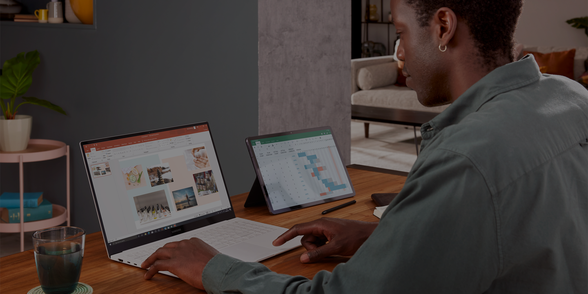

Blog which explains everything Samsung 2022 Devices and other technologies owned the company
Author:
mark.chernomorchenko@student.tuke.sk
Content:
What is the difference between a laptop and a tablet?
When it comes to choosing between a laptop or tablet the choice is not always an easy one since both are designed to be portable computing devices that you can easily carry around. In this guide, we explore some of the key differences between laptops and tablets to help you decide which is best for you.
So how do you choose between a laptop or tablet? On one hand, tablets are extremely portable, versatile and easy to use. On the other hand, laptops are productivity power machines, able to run full feature applications with various connection port options and large screens ideal for multitasking. We’ve unpicked some of the key differences below in our handy comparison.
1. Operating system
Firstly laptops will run most types of operating systems, but Windows is one of the most popular and used for the incredible Galaxy Book2 series of laptops. Windows has exceptional functionality and is the operating system found on many desktop computers. Tablets are more similar to smartphones and use different operating systems. You'll find the popular Android OS in Samsung Galaxy Tab devices. The key difference here is that a tablet will run apps optimized for mobile viewing rather than full programs. Some mobile apps may have less functionality than full laptop programmes.
2. Size and Portability
Laptops and tablets are designed to be easily transported from one location to another but how do they compare in size and portability? Tablets tend to be lighter, thinner and more streamlined than a laptop. Even the largest Galaxy Tab S8 Ultra weighs in at a handbag friendly 728g whereas you can expect most laptops to weigh around 1.5kg.
3. Screen Size
Typically laptops tend to have larger screens which are ideal when it comes to multitasking and gaming. If you’re looking for the best display technology, tablets tend to win. Tablets tend to have a higher pixel density meaning the images you see on the screen will have greater clarity. With Samsung, you’ll enjoy super AMOLED displays on both the flagship Galaxy Book2 Pro 360 and Galaxy Tab S8 Ultra. There are a large variety of screen sizes to choose from across both Galaxy Books and Galaxy Tabs so you are sure to find one that’s right for you.
4. Connectivity
Both Samsung laptops and Galaxy Tabs are Bluetooth and Wifi enabled but the key difference is that with a Galaxy Tab S8 | S8+ | S8 Ultra you have the added benefit of a 5G mobile connection so you can access the web or live stream even when you are out and about. If you plan to use your laptop at home or in the office, this is unlikely to cause an issue but if you’re looking for a device that you can use in a wide variety of different locations, a tablet with a data package may be more suitable.
5. Battery Life
Both Galaxy Books and Galaxy Tabs have a long lasting battery that will last most of the day. Typically, tablets have slightly longer lasting battery life because the hardware components within a tablet consume a lot less power compared to the hardware in a laptop. This is why laptops usually have larger batteries but the power needed to run the laptop is more.
6. Physical Ports
When it comes to physical ports such as USB, Ethernet, audio and HDMI you are much more likely to find them on a laptop 5.than a tablet device. You'll find 4 separate ports on the Galaxy Book2 Pro 360 including Thunderbolt, USB Type-C, USB 3.2 and HDMI. The Galaxy Tab S8 by contrast has one USB 3.2 connection.
-
Tab S8 Ultra
-
Tab S8+
-
Tab S8
-
Galaxy Book2 Pro 360
-
Galaxy Book2 Pro
-
Galaxy Book2 360
Shot on Tab S8 Ultra:
| Name of device | Display | Processor/CPU Speed | Operating System | Battery capacity | Weight | Memory & storage | Best Device: |
|---|---|---|---|---|---|---|---|
| Tab S8 Ultra | 14.6” | Octa-Core | Android | 11200 mAh | 728g | 8GB + 128GB + Micro SD up to 1TB | Tab S8 Ultra |
| Tab S8+ | 12.4” | Octa-Core | Android | 10090 mAh | 572g | 8GB + 256GB + Micro SD up to 1TB | |
| Tab S8 | 11.0” | Octa-Core | Android | 8000 mAh | 507g | 8GB + 256GB + Micro SD up to 1TB | |
| Best by params: | Tab S8+ | Tab S8 | Tab S8 Ultra | Tab S8 Ultra | Tab S8 | Tab S8 Ultra | |
| Best of all by params: | Tab S8 Ultra | ||||||
What are the advantages of a tablet?
Tablets are the ideal choice if you’re looking for a lightweight device that you can easily carry and work on the go with. Whatsmore tablets are ready to go at the touch of a button, have exceptional screens and are incredibly multifunctional with a huge number of apps available whether it’s for work or play. You’ll enjoy the following with a Samsung Galaxy Tab:
- ✓ Lightweight
- ✓ Compact and portable
- ✓ Mobile network connectivity
- ✓ Great for media consumption
- ✓ Intuitive and easy to use
- ✓ Quick start up
- ✓ High quality built-in cameras
- ✓ Optional keyboard and case attachments
If you have your heart set on a tablet, but don't want to run out of memory, you're in luck. Many Samsung tablets have expandable memory, simply put one of our microSD memory cards into the SD card slot.
Can you use a tablet as a laptop?
You can certainly make your tablet look and feel more like a laptop with the addition of a smart keyboard, trackpad and cover and for most day-to-day tasks tablets can be used in a very similar way to a laptop. However, the operating system will remain different and the apps downloaded to your tablet may not be as comprehensive as the full desktop/laptop versions.
Which is better for Zoom: tablet or laptop?
Virtual meetings have become an important part of modern day life so it’s important to know whether a tablet or laptop would work better with Zoom. The good news is Zoom will work well on either a tablet or laptop but there are some differences. We take a look at what you can expect from the tablet version of Zoom vs desktop/laptop Zoom.
Using Zoom on a Galaxy Tab:
With a Samsung Galaxy Tab, you will need to download the mobile version of Zoom (available from the Google Play Store). When you use Zoom on your Galaxy Tab you’ll still be able to video conference as normal but there are a few control restrictions that are only available on the Zoom desktop version. You’ll be able to do the following using the Zoom mobile app:
- ✓ Schedule Zoom meetings
- ✓ Share screen including whiteboard or annotating a shared screen
- ✓ Language interpretation and live transcription
- ✓ Saving and sending files or images
- ✓ Virtual background
- ✓ Encrypting your chat
- ✓ Delete sent messages
Using the Zoom mobile app you will be unable to:
- ✗ Control who can control their screen
- ✗ Start breakout rooms
- ✗ Live stream meetings and webinars
- ✗ Create, edit or launch a poll
- ✗ Pausing a shared screen
- ✗ Editing sent messages
- ✗ Sending GIFs
- ✗ Managing blocked contacts